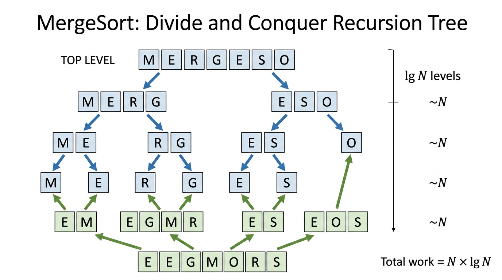

MergeSort — COMP0005 Algorithms¶
Lecture-style notes. MergeSort is the canonical divide-and-conquer sorting algorithm: it is fast, theoretically well understood, and a template for analysing recursion trees and proving lower bounds.
1. COMPLETE TOPIC SUMMARIES¶
MergeSort — the divide-and-conquer idea¶
MergeSort sorts an array by three steps:
- Divide the array into two (roughly) equal halves.
- Conquer by recursively sorting each half.
- Combine by merging the two sorted halves into one sorted segment.
If the subproblem is tiny (zero or one element), it is already sorted — that is the base case.
Mental model: You and a friend each sort half a deck of cards (already sorted in your hands). Then you merge the two sorted piles by repeatedly taking the smaller visible top card — the result is the full sorted deck.
The merge step¶
Input: An array a and indices lo, mid, hi such that:
a[lo..mid]is sorted, anda[mid+1..hi]is sorted.
Goal: Make a[lo..hi] sorted.
Method: Copy the segment a[lo..hi] into an auxiliary array aux, then fill a[lo..hi] from left to right by always choosing the smaller of the two current front elements from the left and right sorted runs.
Two pointers:
istarts atlo(front of left run inaux).jstarts atmid+1(front of right run inaux).
At each position k from lo to hi, decide which value to write to a[k]:
- If the left run is exhausted (
i > mid), take from the right. - Else if the right run is exhausted (
j > hi), take from the left. - Else compare
aux[i]andaux[j]and take the smaller.
Pseudocode:
merge(a[], aux[], lo, mid, hi):
for k = lo to hi:
aux[k] = a[k]
i = lo
j = mid + 1
for k = lo to hi:
if i > mid:
a[k] = aux[j]; j++
else if j > hi:
a[k] = aux[i]; i++
else if aux[j] < aux[i]:
a[k] = aux[j]; j++
else:
a[k] = aux[i]; i++
Why copy to aux first? Merging in place in a simple way is tricky; the textbook approach uses \(\Theta(hi-lo+1)\) extra space for the merge buffer so you can read from aux while writing the merged order back into a.
Correctness sketch: Induction on the length of the merged segment. Invariant: before handling k, all of a[lo..k-1] contains the k-lo smallest elements of aux[lo..hi] in sorted order, and i, j point at the next unmerged elements in each run.
The sort step (top-down recursion)¶
Pseudocode:
sort(a[], aux[], lo, hi):
if hi <= lo:
return
mid = lo + (hi - lo) / 2
sort(a, aux, lo, mid)
sort(a, aux, mid + 1, hi)
merge(a, aux, lo, mid, hi)
Typical top-level call: allocate aux of length N, then sort(a, aux, 0, N-1).
Why mid = lo + (hi - lo) / 2? This avoids overflow bugs that can appear with (lo + hi) / 2 in other languages when indices are large.
Call tree (example): sort(0, 6) splits into sort(0, 3) and sort(4, 6), which split further until hi <= lo, then merges bubble upward until the whole range is sorted. For \(N\) a power of two, the recursion tree is a balanced binary tree of depth \(\lg N\) (base 2 is standard in this course unless stated otherwise).
Practical improvements¶
-
Skip merge if already in order: After the two recursive calls, if
a[mid] <= a[mid+1], the combined segment is already sorted — skipmerge. This helps nearly sorted or partially sorted data and does not break correctness. -
Avoid copying the full range every time (role swapping): A common implementation trick is to pass two arrays and swap which is “source” and “destination” at each recursion level so you do not always copy
a[lo..hi]intoauxin the same way. The asymptotic cost remains \(\Theta(N \log N)\) for typical analyses, but constants improve. (Exam focus is usually on the standardmergeabove plus the \(\Theta(N)\) auxiliary memory story.)
Analysis¶
Let \(T(N)\) be the worst-case running time to sort \(N\) elements.
Recurrence (merge cost \(\Theta(N)\)):
Solution: \(T(N) = \Theta(N \log N)\).

{kind=link}
Intuition (when \(N\) is a power of two): The recursion tree has \(\lg N\) levels; each level touches all \(N\) elements once (across the merges at that level) → \(N \log N\) total work.
Finer statements (as often quoted in COMP0005-style treatments):
- MergeSort uses at most \(N \log_2 N\) compares (up to constant-factor slack depending on counting conventions).
- It may be reported as using on the order of \(6 N \log_2 N\) array accesses in a typical counting model (reads/writes to
aandauxduring copy + merge). Treat the exact constant as implementation-dependent; the growth rate is what matters.
Empirical takeaway: For large \(N\), \(\Theta(N^2)\) algorithms (e.g. Insertion Sort in the worst case) become unusable, while \(\Theta(N \log N)\) methods remain feasible. A rough “orders of magnitude” story: at \(10^8\) compares per second, \(10^9\) Insertion-Sort compares is years of work; \(10^9 \log_2 10^9\)-scale MergeSort work is minutes — not because constants are magically tiny, but because \(\log N\) is small compared to \(N\).
Optimality (comparison-based sorting)¶
Theorem (comparison lower bound): Any comparison-based sorting algorithm requires \(\Omega(N \log N)\) comparisons in the worst case (and also in the average case under reasonable models).
Consequence: MergeSort’s \(\Theta(N \log N)\) worst-case time matches this bound up to constants — it is asymptotically optimal among comparison sorts.
What “comparison-based” means: The algorithm only learns information about the input by comparing pairs of elements (e.g.
a[i] < a[j]). No hashing the whole array into integers in \(O(1)\) time per element, no radix tricks — those can beat \(N \log N\) under extra assumptions.
Memory¶
- MergeSort needs \(\Theta(N)\) extra array space for
aux(plus \(\Theta(\log N)\) recursion stack frames in a typical recursive implementation). - It is not in-place in the strict sense: in-place usually means \(O(\log N)\) extra memory (beyond the input array).
Contrast:
| Algorithm | Typical extra memory |
|---|---|
| Selection Sort | \(O(1)\) |
| Insertion Sort | \(O(1)\) |
| Merge Sort | \(O(N)\) |
Stability¶
A sort is stable if, for equal keys, the algorithm preserves the original relative order of those items.
| Algorithm | Stable? |
|---|---|
| Insertion Sort | Yes |
| Merge Sort | Yes* |
| Selection Sort | No |
* Provided the merge breaks ties by taking from the left run when aux[j] == aux[i] (the pseudocode above uses <, not <=, on aux[j] vs aux[i], which does exactly that).
Why Selection Sort fails stability: It repeatedly selects a minimum and may swap it a long distance, jumping over equal keys and reordering equal elements.
Why stability matters (example): Sort students by course, then stable sort by name — you get alphabetical order within each course. An unstable second sort can scramble names among ties.
2. EXAM-STYLE QUESTIONS (WITH MODEL ANSWERS)¶
Q1 — Trace merge¶
Question. Left run: [1, 4, 7], right run: [2, 5, 6]. Show the merged output and list the compare outcomes in order (enough to justify the merge’s decisions).
Model answer. Merged: [1, 2, 4, 5, 6, 7]. A typical compare sequence: 1 vs 2 (take 1), 4 vs 2 (take 2), 4 vs 5 (take 4), 7 vs 5 (take 5), 7 vs 6 (take 6), then left run has 7 only (no compare needed vs empty right). (Exact compare count depends on exhaustion cases, but the output order is unique.)
Q2 — Recurrence and big-O¶
Question. Explain why MergeSort’s worst-case time is \(\Theta(N \log N)\) using the recurrence \(T(N) = 2T(N/2) + \Theta(N)\).
Model answer. Unroll one level: \(T(N) = 2\bigl(2T(N/4) + \Theta(N/2)\bigr) + \Theta(N) = 4T(N/4) + 2\Theta(N)\). After \(k\) levels: \(2^k T(N/2^k) + k\cdot \Theta(N)\). Stop at \(N/2^k = 1\) ⇒ \(k = \log_2 N\). Then \(T(N) = N T(1) + \Theta(N \log N) = \Theta(N \log N)\). (Master theorem / tree method gives the same.)
Q3 — Lower bound and “optimality”¶
Question. What does it mean that MergeSort is optimal among comparison-based sorts?
Model answer. Any comparison-based sorting algorithm needs \(\Omega(N \log N)\) comparisons in the worst case. MergeSort runs in \(O(N \log N)\) worst case, so its growth rate matches the lower bound: no comparison sort can beat \(\Theta(N \log N)\) asymptotically in the worst case.
Q4 — Stability¶
Question. Is MergeSort stable with the merge rule if aux[j] < aux[i] (strict inequality) when equal keys appear in both halves? Justify briefly.
Model answer. Yes. When aux[j] == aux[i], the else branch takes aux[i] from the left run first, preserving the earlier element’s relative position before later equal keys from the right — the definition of stability.
Q5 — Space and in-place status¶
Question. Why is MergeSort not considered in-place, and what is the extra memory?
Model answer. It allocates an auxiliary array of size proportional to \(N\) (typically \(\Theta(N)\)) to merge. In-place sorting is usually defined as \(O(\log N)\) extra memory (plus sometimes allowing \(O(1)\) pointers). \(\Theta(N)\) auxiliary storage exceeds that, so MergeSort is not in-place.
3. MUST-KNOW KEY POINTS¶
- Pattern: Divide array → sort halves → merge two sorted runs in linear time in the run lengths.
- Merge correctness relies on two sorted inputs and the two-pointer “always take smaller front” rule.
- Time: \(\Theta(N \log N)\) worst case for typical implementations; matches comparison-sort lower bound.
- Space: \(\Theta(N)\) auxiliary array (plus \(O(\log N)\) recursion stack in recursive code).
- Stability: Stable if ties break toward the left run (use
<, not<=, when comparing right vs left in the pseudocode above). - Not in-place vs Insertion/Selection which use \(O(1)\) extra memory.
- Practical tweak: If
a[mid] <= a[mid+1], skip merge — safe optimisation.
4. HIGH-PRIORITY TOPICS¶
🔴 Must Know¶
- Divide-and-conquer structure:
sort→ two recursive calls →merge mergepseudocode (copy toaux, two pointers, four cases)- \(\Theta(N \log N)\) time and why (levels × \(N\) work per level)
- \(\Omega(N \log N)\) comparison lower bound and what “optimal” means
- \(\Theta(N)\) extra memory; not in-place
- Stability definition + why MergeSort is stable with
<tie-breaking
🟡 Important¶
- Call tree picture for \(N\) a power of two (depth \(\lg N\))
- Base case
hi <= lo mid = lo + (hi-lo)/2(overflow-safe midpoint)- Skip-merge optimisation when already ordered
- Empirical contrast: \(N^2\) vs \(N \log N\) at large \(N\)
🟢 Useful but Lower Priority¶
- Role-swapping/double-buffer tricks to improve constants
- Exact constant factors like “\(6N\log N\) accesses” as reported in some slides (know it is model-dependent)
- Relationship to other \(N\log N\) sorts (Heapsort, Quicksort variants) — different constants, stability, in-place trade-offs
5. TOPIC INTERCONNECTIONS & BIGGER PICTURE¶
- Divide and conquer reappears in binary search, closest pair, fast multiplication, Strassen-style ideas, etc. MergeSort is the cleanest introductory example: same-sized subproblems + linear-time combine.
- Recursion trees and the Master Theorem are general tools for recurrences like \(T(N)=aT(N/b)+f(N)\); MergeSort is the flagship case \(a=b=2\), \(f(N)=\Theta(N)\).
- Sorting lower bounds connect to decision trees: \(N!\) outcomes ⇒ \(\log_2(N!)=\Theta(N\log N)\) height in a comparison model.
- Stability matters when sorting by multiple keys (lexicographic / radix-style pipelines).
- Space-time trade-off: MergeSort buys worst-case speed and stability with linear extra memory; Heapsort is in-place but not stable; Quicksort is fast in practice but needs careful partitioning and analysis.
6. EXAM STRATEGY TIPS¶
- Be able to trace
mergeon a small example (6–8 elements) without arithmetic mistakes on pointersi,j,k. - Write the recurrence and finish with \(\Theta(N\log N)\) in one or two lines — examiners reward the correct template.
- If asked “optimal?”: always mention comparison-based model + \(\Omega(N\log N)\) lower bound + MergeSort matches asymptotically.
- Stability questions: tie-break rule in merge (
<vs<=) is a classic trap. - In-place questions: state the \(\Theta(N)\)
auxarray explicitly; contrast with Insertion/Selection \(O(1)\) extra. - For improvements, the “already sorted between halves” shortcut is easy marks if you say why it preserves correctness (two sorted halves + global order already holds).
These notes align with standard COMP0005 treatments of MergeSort; always follow your lecturer’s exact definitions of “array access” counts and logarithm bases if they differ.